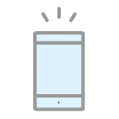

경영이양 직불제

- 경영이양 직불제란?
- 어촌공동체 유지 및 활성화 도모를 위해 "어업 경영을 이양하고 은퇴하는 고령 어업인" 에게 경영이양 직접직불금을 지급하는 제도 (2021.3.1.시행)
-
* '경영이양'의 개념
「수산업·어촌 공익기능 증진을 위한 직접지불제도 운영에 관한 법률」에 따라 시행하는 경영이양 직불제의 “경영이양” 이란 만 65세 이상 만 80세 미만인 어업인*이 어촌계원 자격을 만 60세 이하의 어업인에게 이양하고 어촌계를 영구적으로 탈퇴하는 것을 말함
* 2023.4.1.~2026.12.31.까지 한시적으로 신청 연령 확대(「수산직불제법」부칙 제2조)
지원대상
어업경영을 이양하고 은퇴하는 고령 어업인의 소득안정과 젊은 후계어업인 유입 촉진을 통한 어촌공동체 유지 및 활성화 도모
신청자격 및 요건
-
「농어업경영체 육성 및 지원에 관한 법률」제4조제1항제2호에 따라 어업경영 관련 정보 등을 등록(변경등록 포함)한 어업인 중
「수산업협동조합법」제15조에 따른 어촌계의 계원 자격(「내수면어업법」제15조에 따른 내수면업계의 계원 포함)을 만 60세 이하의
젊은 후계어업인에게 이양하고 은퇴하려는 고령의 어업인
* 경영이양 직접지불금 지급대상자 선정통지서를 받은 날부터 약정체결 전날까지 어촌계원 자격을 만 60세 이하의 후계어업인에게 이양하고 해당 어촌계 탈퇴를 완료한 경우에만 경영이양 직접지불금 지급
- 경영이양 직접지불금 지급대상자 선정 신청일을 포함하여 이전 5년 이상 계속하여 어촌계원 자격을 유지하고 있는 어업인. 다만, 어촌계 인가를 받은 후 5년이 지나지 않은 어촌계의 어촌계원은 어촌계 인가일부터 계속하여 어촌계원 자격을 유지하고 있는 경우도 가능
-
선정 신청일 현재 만 65세 이상 만 80세 미만인 어업인
* `26.12.31까지 어촌계원 자격 유지 기준(10년→5년) 및 신청 연령(만 65세~75세 미만→만 65세~80세 미만)을 한시적으로 완화
- 경영이양 직불금은 조건불리지역 직접지불금과 중복하여 지급할 수 없음
- 사업대상자 요건을 갖춘 어업인 중 경영이양 직접지불금 지급대상자 선정 신청연도의 직전 3년간 결산보고서 등으로 증명할 수 있는 소득이 있는 어촌계의 계원일 것
지급 제한
-
경영이양직불금 지급대상자 또는 수령자가 다음 각호의 어느 하나에 해당하면 직불금 전부 또는 일부를 지급하지 않음 (「수산직불제법」제21조)
- - 거짓이나 그 밖의 부정한 방법으로 직불금을 신청 또는 수령한 경우
- - 직불금을 수령하기 위하여 거짓이나 그 밖의 부정한 방법으로 어업경영체에 등록한 경우
- - 어촌공동체 유지와 활성화 등을 위하여 어촌계의 자격을 이양하는 어업인 중「수산직불제법」제14조에 따른 지급요건을 모두 갖추지 못한 경우
- - 관계 공무원 등의 조사 등에 성실히 협조하여야 하나, 정당한 사유 없이 이를 거부·방해하거나 기피하는 경우
- - 착오 또는 경미한 과실로 사실과 다르게 신청하거나 잘못 수령한 경우
지급 제외
- 특별자치도지사·시장·군수 또는 자치구의 구청장과 약정을 체결한 자가 거짓이나 그 밖의 부정한 방법으로 약정을 체결하거나 탈퇴 전에 소속해 있던 어촌계에 재가입하거나 다른 어촌계의 계원으로 가입하여 약정이 해제된 경우
- 약정이 해제 또는 해지된 경우, 환수되어야 하는 금액을 완납하지 아니한 어업인
- 경영이양을 받고자 하는 사람이 경영이양 직접지불금 지급 신청자의 배우자나 직계존비속인 경우
-
「해양수산부 국고보조금 관리에 관한 규정」제13조4항 및 제23조1항의 각호에 해당하는 사람은 선정 및 보조금 교부 제외
▶ 해양수산부 국고보조금 관리에 관한 규정
-
제13조(보조사업자 선정기준) ④ 사업담당부서의 장은 보조사업자가 다음 각 호에 해당하는 경우 보조사업자 선정에서 제외하여야 한다.
- 1. 보조금법 제31조의2에 따라 보조사업 또는 간접보조금의 수행대상에서 배제되거나 보조금 또는 간접보조금의 교부를 제한받은 경우
- 2. 제16조제1항에 따라 중복수급에 해당되는 경우
-
제23조(보조금 교부조건) ① 사업담당부서의 장은 보조금법 제18조에 따라 교부조건을 붙이는 경우에 보조사업자가 다음 각 호에
해당하는 행위를 하는 경우, 보조금 교부결정의 전부 또는 일부를 취소할 수 있음을 명시하여야 한다.
- 1. 허위의 신청이나 그 밖에 부정한 방법으로 보조금을 교부받은 경우
- 2. 보조금을 다른 용도에 사용한 경우
- 3. 보조사업자가 법령의 규정, 보조금의 교부조건의 내용 또는 법령에 따른 해양수산부장관의 처분에 위반한 경우
- 4. 해당 보조금 지원과 직접 관련된 전제 조건이 사후에 충족되지 아니하는 경우
- 5. 동일 또는 유사한 사업계획으로 다른 기관으로부터 중복하여 보조금을 받은 경우
-
제13조(보조사업자 선정기준) ④ 사업담당부서의 장은 보조사업자가 다음 각 호에 해당하는 경우 보조사업자 선정에서 제외하여야 한다.
지급 금액
- 어촌계 1인당 평균 결산소득이 200만 원 이하는 연 120만 원(정액), 200만 원 초과 2,400만 원 이하는 60%, 2,400만 원 초과는 연 1,440만 원(정액)으로 산정
최근 3년간 어촌계
1인당 결산소득 평균의
1인당 평균 결산 소득이
- 200만원 이하 일 때 : 120만원 정액
- 200만원 초과 ~ 2,400만원 이하 : 60%
- 2,400만원 초과 : 1,440만원 정액
- 2023년 신규 또는 신규 지급 후 변경되는 지급대상자는 아래의 표와 같이 한시적으로 적용되는 연령별 지급기간으로 지급약정을 체결하고, 연간 지급액에 지급기간을 곱한 값을 총지급액으로 함
* 지급기간은 약정을 체결한 날이 속하는 달의 다음 달부터 계산함
- 종전 규정에 따라 경영이양직접지불금을 지급받고 있는 어업인에 대해서는 아래의 표와 같이 연령별 지급기간을 적용하되 이미 지급한 기간은 월 단위로 산정하여 제외한 후 지급
| 연령 | 지급 기간 |
|---|---|
| 만 65세부터 ~ 만 75세까지 | 10년 |
* 지급기간은 약정을 체결한 날이 속하는 달의 다음 달부터 계산함
사업추진 절차
* (선정대상자 신청부터 신청자에게 선정 결과 통보까지 총 60일 소요)
-
(신청자→ 특별자치도지사등)
1. 경영이양 직접지불금
선정 신청 -
(특별자치도지사등)
2. 지급대상자
적격여부 확인 -
(특별자치도지사등)
 3. 지급 대상자 선정
3. 지급 대상자 선정
-
(특별자치도지사등→신청자)
4. 선정결과
신청자에게 통보 -
* (계원 자격 이양 완료)
(특별자치도지사등↔지급대상자)
 5. 약정체결
5. 약정체결 -
(특별자치도지사등→지급대상자)
 6. 직불금 지급
6. 직불금 지급
* (선정결과 통보 이후 약정체결까지 30일 소요)